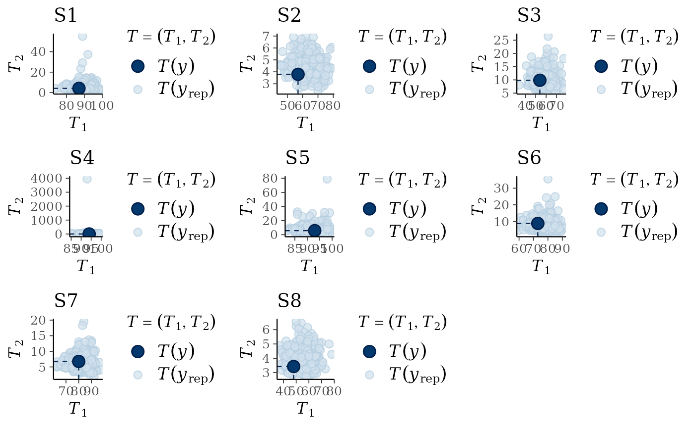
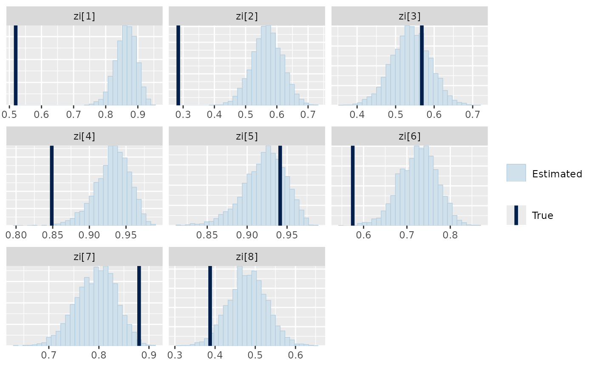
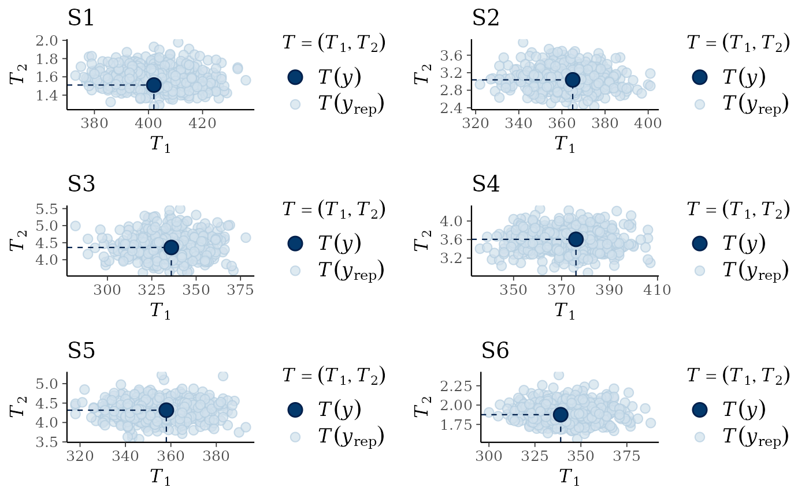
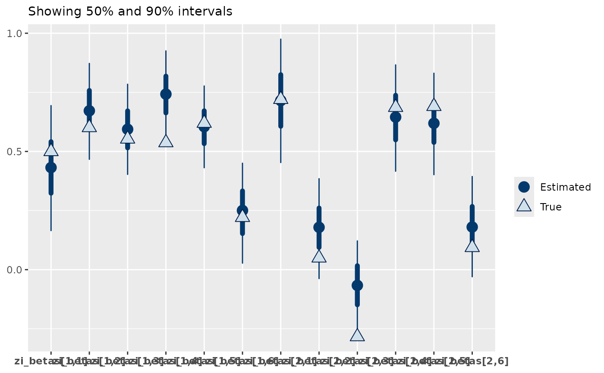
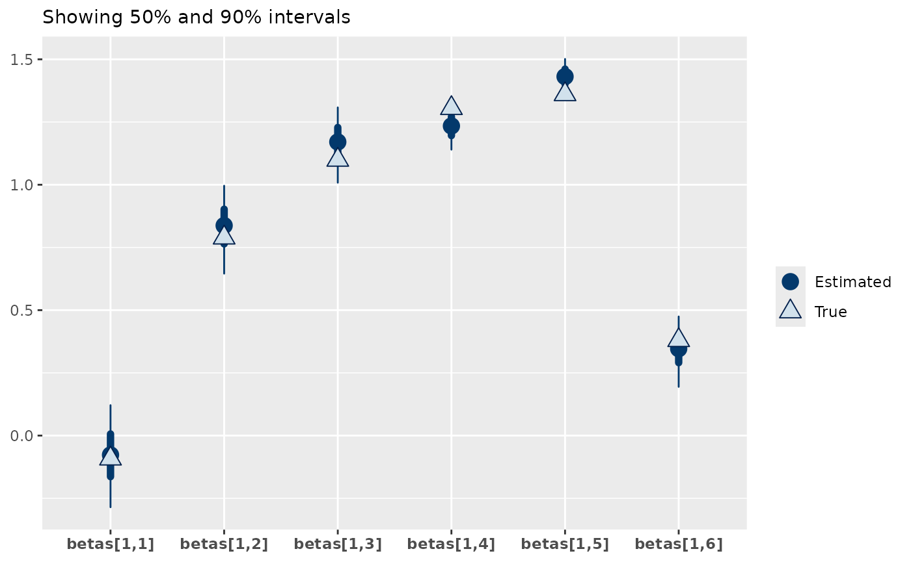

Modelling Zero Inflation and Other Family Parameters in Response to Environmental Covariates
zero-inflation.RmdZero-inflated models allow for highly frequent zero-valued observations within count data, i.e. more zeros appear in the data than can be explained by the covariates within the count model without zero-inflation. A high number of zeros within the data is not sufficient reason to fit a zero-inflated model, as in many cases the high number of zeros may be entirely explained by the covariates already within the model. For example, consider the case where a species only appears on the coast and you are working with data from the entire country (which is mostly non-coastal). Fitting a model that does not include proximity to coast will struggle to explain the distribution of this species, and most likely result in a zero-inflated appearing distribution. However, if you were to include the proximity of the coast as an environmental covariate the large number of zeros would be explained entirely by the model without any need to explicitly consider zero-inflation within the model structure. Therefore, these zero-inflated distributions are particularly useful for cases where any zeros in the data may come from more than one data-generating process. For example, perhaps a species is underreported and as such you have a combination of zeros that are ‘true zeros’ and zeros that are ‘false zeros’. A zero-inflated model could be fit to this data in an attempt to account for this mixture of data-generating processes.
The jsdmstan package supports two zero-inflated
families, the zero-inflated Poisson distribution and the zero-inflated
negative binomial distribution. These models assume that the data arises
from a combination of two processes, the zero-inflation process and the
count distribution process:
Where
is the data at point
,
is the zero-inflation at point
,
is the vector of parameters for any particular count distribution at
point
.
The important thing to note here is that a zero can occur due to either
of the
or the
parameters, representing the two data generating processes mentioned
above. The Poisson or negative binomial parts of the distribution behave
as they would in any other jSDM model in jsdmstan, where
the
parameters are modelled as a function of a combination of environmental
covariates and species covariance.
Within jsdmstan the zero-inflation parameter
(
above) can either be included as a species-specific constant or modelled
as a function of environmental covariates (not necessarily the same ones
as the rest of the model responds to). Currently the zero-inflation
parameter cannot also be modelled as a function of the species
covariance. Note that no information is shared between the estimation of
the effects of the environmental covariates upon the mean (and kappa, if
a negative binomial) parameters within the count distribution and the
zero-inflation parameters.
Example with zero-inflation as a constant by species
First, we can simulate data according to a zero-inflated negative binomial distribution, the default behaviour is to assume zero-inflation is a constant by species so this is what we do here:
set.seed(430150)
nb_dat <- jsdm_sim_data(N = 100, S = 8, K = 1, method = "gllvm", D = 2,
family = "zi_neg_bin")There’s a higher probability of simulating a species with no
observations whatsoever when using jsdm_sim_data() with
zero-inflated distributions, but a message warning you of an empty
column in Y will be printed to the console if that happens
in your case.
Now we can fit the model (lowering the number of iterations to improve runtime):
nb_mod <- stan_jsdm(dat_list = nb_dat, family = "zi_neg_bin", method = "gllvm",
refresh = 0, iter = 2000)
nb_mod
#> Family: zi_neg_binomial
#> With parameters: kappa, zi
#> Model type: gllvm with 2 latent variables
#> Number of species: 8
#> Number of sites: 100
#> Number of predictors: 0
#>
#> Model run on 4 chains with 2000 iterations per chain (1000 warmup).
#>
#> No parameters with Rhat > 1.01 or Neff/N < 0.05No warnings are returned, or anything particularly concerning in terms of rhat or neff.
Now we can look at the data recovery, as there are some species that
were simulated to have very extreme maximum values (check
max(nb_dat$Y)), the overall distribution is hard to see
using the default multi_pp_check options, so we use the statistics
option and simultaneously check the recovery of the mean and the
standard deviation:
multi_pp_check(nb_mod, plotfun = "stat_2d",
stat = list(function(x) sum(x==0),
function(x) mean(x[x>0])),
ndraws = 500)
#> Warning: Removed 11 rows containing missing values or values outside the scale range
#> (`geom_point()`).
#> Warning: Removed 5 rows containing missing values or values outside the scale range
#> (`geom_point()`).
We can see that the mean and standard deviation of the data are always nested within the model predictions, indicating a reasonable fit to the data.
We can also see if the model did well at recovering the zero-inflation parameters used within the data simulation:
mcmc_plot(nb_mod, plotfun = "recover_hist", pars = "zi", regexp = TRUE,
true = nb_dat$pars$zi)
#> `stat_bin()` using `bins = 30`. Pick better value `binwidth`.
It is obvious from this that the zero-inflation estimated by the model is often larger than that of the data, indicating that the model is assuming more zeros come from the zero-inflation process and therefore possibly overestimating the negative binomial mean part of the model. This demonstrates how these very flexible model structures can end up fitting the data well, but potentially in a different way to the actual data generating process.
Zero-inflation varying by environmental conditions
We can also fit a zero-inflated model where the zero-inflation part of the model varies due to some set of environmental covariates. These covariates could be the same as those within the rest of the model, or instead be a completely different set of covariates. An example of this could be a model that accounts for recording effort, as you get fewer zeros when recording effort is low.
set.seed(3590123)
zi_X <- as.matrix(data.frame(NR = sample(0:2, size = 500, replace = TRUE,
prob = c(0.5,0.25,0.1))))
data_sim <- jsdm_sim_data(S = 6, N = 500, zi_X = zi_X, K = 0,
family = "zi_poisson", method = "mglmm",
prior = jsdm_prior(betas="normal(1,0.5)",
zi_betas = "normal(0.5,0.25)"))
#> zi_X has been provided without an intercept, so one has been addedWe get a message back saying an intercept has been added to zi_X - jsdmstan requires that an intercept is included for prediction of zi, so as we did not include one in our zi_X matrix one is added for us.
zip_mod <- stan_jsdm(dat_list = data_sim, family = "zi_poisson",
method = "mglmm", cores = 4, iter = 4000, thin = 5,
prior = jsdm_prior(betas = "normal(1,0.5)",
zi_betas = "normal(0.5,0.25)"))
#> Warning: Bulk Effective Samples Size (ESS) is too low, indicating posterior means and medians may be unreliable.
#> Running the chains for more iterations may help. See
#> https://mc-stan.org/misc/warnings.html#bulk-essThis model runs without any warnings, and if we print the model summary we can see that while there are a couple of parameters that are flagged for low ESS, the overall Bulk.ESS is still over four hundred so we’re not too worried about those:
zip_mod
#> Family: zi_poisson
#> With parameters: zi
#> Family-specific parameter zi is modelled in response to 2 predictors. These are named: (Intercept), NR
#> Model type: mglmm
#> Number of species: 6
#> Number of sites: 500
#> Number of predictors: 0
#>
#> Model run on 4 chains with 4000 iterations per chain (2000 warmup).
#>
#> Parameters with Rhat > 1.01, or Neff/N < 0.05:
#> mean sd 15% 85% Rhat Bulk.ESS Tail.ESS
#> z_species[1,363] 0.136 1.057 -0.977 1.216 1.011 1038 1458
#> cor_species_chol[3,1] 0.135 0.344 -0.228 0.497 1.016 302 616
#> cor_species_chol[6,3] -0.081 0.364 -0.474 0.325 1.013 499 764
#> cor_species[1,3] 0.135 0.344 -0.228 0.497 1.016 302 616
#> cor_species[3,1] 0.135 0.344 -0.228 0.497 1.016 302 616Note that the printed model summary also includes a little description of how the family-specific zero-inflation parameter is modelled in response to data.
Next, we look at the fit to the data:
multi_pp_check(zip_mod, plotfun = "stat_2d",
stat = list(function(x) sum(x==0),
function(x) mean(x[x>0])),
ndraws = 500)
We can see that the model is correctly estimating both the number of zeroes for each species and the mean within the non-zero records.
We now check the recovery of the model parameters, specifically the zi_betas:
mcmc_plot(zip_mod, plotfun = "recover_intervals", pars = "zi_betas",
regexp = TRUE,
true = c(data_sim$pars$zi_betas))
From this we can see that the model is doing well at recovering the zi_betas, with 75% of the true parameter estimates within the 50% interval of the estimates and 92% within the 95% intervals. Similarly, the beta parameters of the poisson are well recovered.
mcmc_plot(zip_mod, plotfun = "recover_intervals",
pars = paste0("betas[1,",1:6,"]"),
true = c(data_sim$pars$betas))